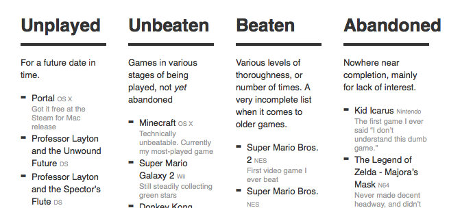

Unplayed // ShaunInman

A super simple way of keeping track of your video games in their various stages (Unplayed, Unbeaten, Beaten, Abandoned). Already installed this for myself, and updated my own (incomplete) lists.
- Prior: Mantia - Wallpaper
- Next: Cranking | 43 Folders